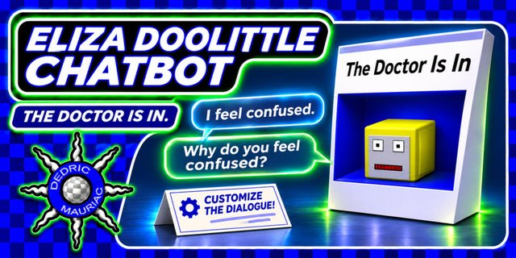

Eliza Doolittle Chatbot
ELIZA in Linden Scripting Language

A port of Joseph Weizenbaum's 1966 ELIZA into Second Life: a parody of a Rogerian therapist that listens to nearby residents and answers.
Executive summary
Why it exists
ELIZA is a famous 1966 program, a parody of a Rogerian therapist that turns your statements back into questions. Its code was freely available in many forms, but not inside Second Life.
Outcome
Eliza was given away free with full permissions, one of the many products from my Second Life shop, Dedric Mauriac's Gadget Shop.
My role
Author.
Technical overview
How it works
An object that listens to nearby residents and rephrases what they say into a reply, without depending on any outside website. Its responses live in a notecard that can be changed. The repository has versions 1.0 to 1.2, a script that offered update subscriptions, and notes on a Synthesized Voice Box add-on that speaks Eliza's replies.
Hard parts
Second Life has no file for an object, so getting it out was its own job: a script writes LSL that rebuilds each prim, plus notes on permissions and contents. Textures exist only as asset IDs.